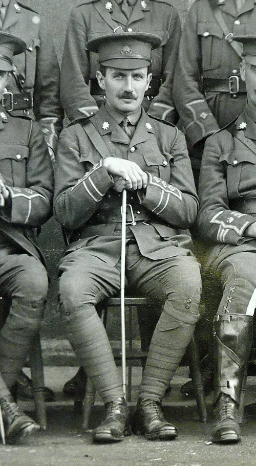
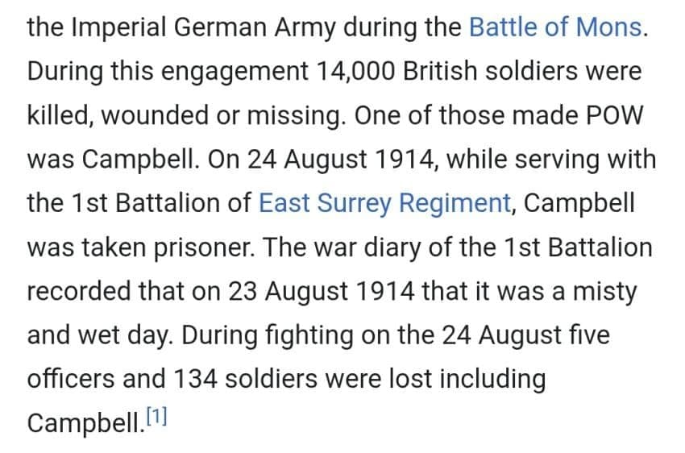
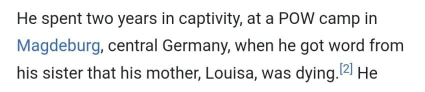
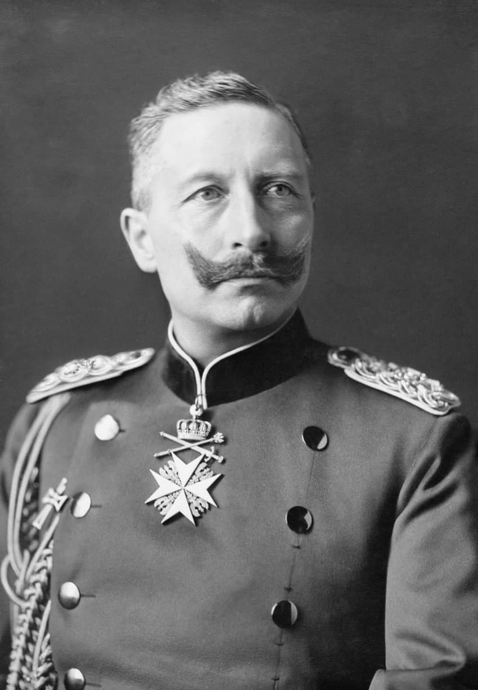
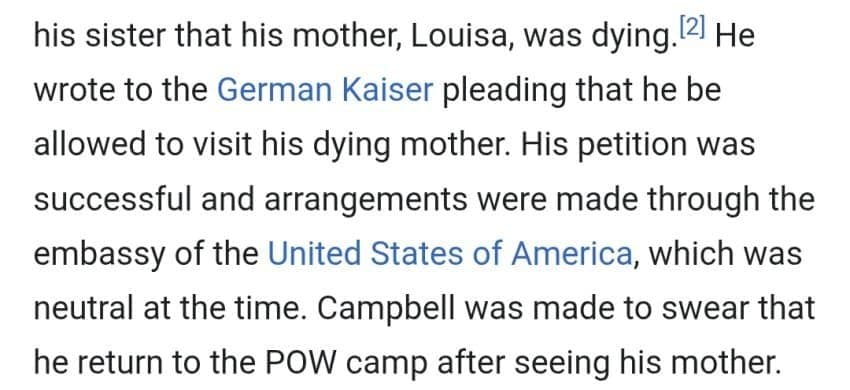
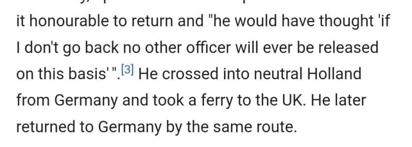
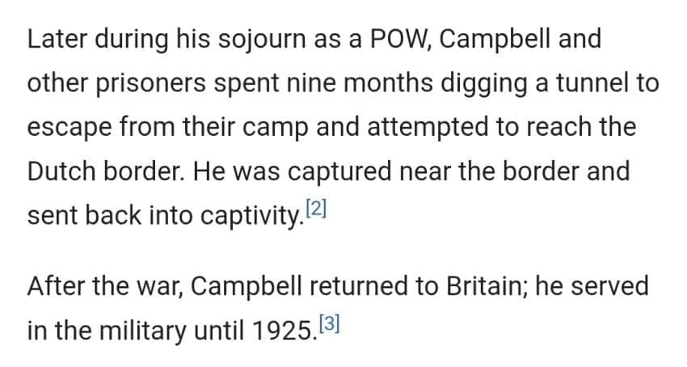

오늘의 주인공
로버트 C 캠벨. (Robert. C. Campbell)
그는 1차대전 당시 영국 육군 대위였다.

켐벨 대위는 1차대전 전선에서 싸우다가 독일 제국에게 포로로 잡히게 된다.
그의 일기에 따르면 포로로 잡힌 날은 안개가 많고 습한 날이었다고 한다.

마그데부르크의 포로수용소에 갇혀있던 그에게 여동생을 통해 비보가 도착한다.
어머니 루이자가 위독하다는 것.
어머니의 임종을 지킬수 없을지도 모른다는 생각에 캠벨은 신사로써 또 다른 신사 한명에게 어머니의 임종을 지키기 위해 포로수용소에서 잠시 풀어달라는 내용의 편지를 쓰기 시작한다.

그 신사의 이름은 독일 제국 카이저 빌헬름 2세.

놀랍게도 카이저는 이 요구를 허락한다.
당시는 중립국이었던 미국의 양국 대사관에서 세세한 합의가 이루어졌으며
켐벨 대위는 어머니를 뵙고 나면 포로수용소로 돌아오겠노라고 약조한다.

캠벨은 중립국 네덜란드로 건너간 후 영국으로 가 일주일동안 어머니의 임종을 지켰다.
이후 켐벨은 놀랍게도 네덜란드를 통해 포로수용소로 돌아왔다.
그의 전기 작가는 켐벨이 "내가 돌아가지 않는다면 나와 같은 사례가 더이상 이어지지 못할수도 있다" 라고 생각했으리라고 추측한다.
신사와 신사 사이의 명예로운 약속을 지킨 것이다.

신사와 신사 사이의 명예를 완수한 캠벨은
이번에는 영국 군인으로써의 명예를 지키기 위해
다른 포로들과 포로수용소 내부에서 9개월동안 땅굴을 파서 탈출한다.
아쉽게도 독일 국경에서 잡혀 다시 포로수용소로 잡혀들어갔다고 한다.
그는 전쟁 끝까지 살아남아 영국으로 귀환하였다.